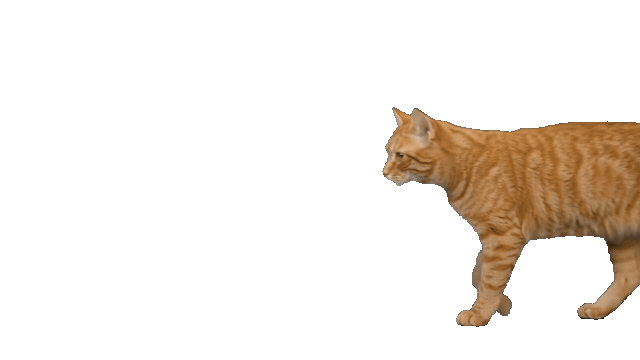

Your pace
Choose when reminders appear and how long each break lasts.
For Mac
An orange cat wanders onto your screen, settles in, and keeps you company while you pause.
A pause, made simple
Choose the animal you would like to see in Settings.
Start a break when you like, or let a reminder bring them by.
Give the cat a gentle pet, snooze the reminder, or close the break.
Cat Break
Watch the cat arrive, settle down, and make room for a little pause.
Download on the Mac App Store
Cat Break
Choose when reminders appear and how long each break lasts.
Pet the sleeping cat with a trackpad or mouse.
Sounds are optional. Settings stay on your Mac.
Privacy
Your settings and break history stay on your Mac. Cat Break has no account, ads, or analytics.
Support
For help with Cat Break, send us an email.
간단한 휴식
설정에서 휴식 시간에 만날 동물을 선택해요.
원할 때 휴식을 시작하거나 알림에 맞춰 함께 쉬어요.
고양이를 쓰다듬거나, 알림을 미루거나, 휴식을 끝내면 돼요.
Cat Break
알림 간격과 휴식 시간을 직접 정할 수 있어요.
트랙패드나 마우스로 잠든 고양이를 쓰다듬어요.
소리는 선택 사항이고 설정은 Mac에 저장돼요.
개인정보
설정과 휴식 기록은 Mac에 저장돼요. 계정·광고·분석 기능은 없어요.
문의
Cat Break 사용에 관한 문의를 이메일로 보내주세요.
簡単なひと休み
設定で休憩中に表示する動物を選びます。
好きなときに始めるか、通知に合わせて休憩します。
猫をなでる、通知をあとにする、休憩を終える。自由に選べます。
Cat Break
通知の間隔と休憩時間を設定できます。
トラックパッドやマウスで、眠っている猫をなでられます。
サウンドは任意です。設定はMacに保存されます。
プライバシー
設定と休憩の記録はMacに保存されます。アカウント、広告、解析機能はありません。
サポート
Cat Breakについてのご質問はメールでお知らせください。
Pour Mac
Un chat roux arrive à l’écran, s’installe et vous tient compagnie pendant votre pause.
Une pause, tout simplement
Choisissez l’animal qui vous accompagnera dans les réglages.
Lancez une pause quand vous le souhaitez ou laissez un rappel vous y inviter.
Caressez le chat, reportez le rappel ou terminez la pause.
Cat Break
Regardez le chat arriver et s’installer pendant votre pause.
Télécharger sur le Mac App StoreCat Break
Choisissez la fréquence des rappels et la durée des pauses.
Caressez le chat endormi avec le trackpad ou la souris.
Les sons sont facultatifs. Vos réglages restent sur votre Mac.
Confidentialité
Vos réglages et l’historique des pauses restent sur votre Mac. Cat Break n’a ni compte, ni publicité, ni outil d’analyse.
Assistance
Pour toute question sur Cat Break, envoyez-nous un e-mail.